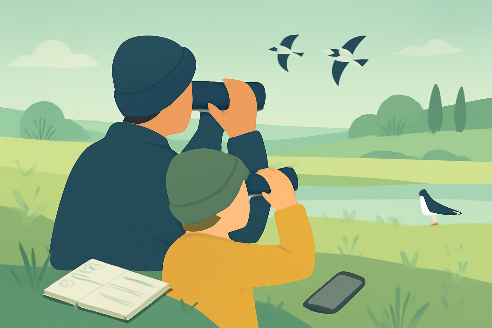
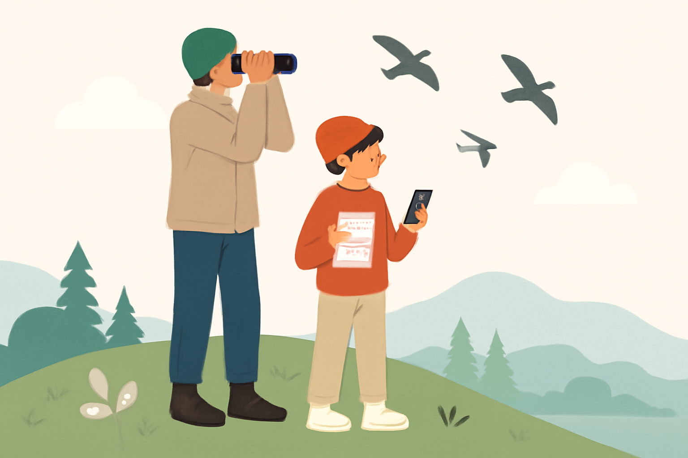

Fågelrundan – digital fältlogg för nybörjare
Gör din första fågelrunda minnesvärd! En enkel, mobilvänlig fältlogg & checklista för dig som vill upptäcka fågelskådning utan stress över artbestämning.
Vad ingår?
- En nedladdningsbar, mobilvänlig PDF där du enkelt loggar dina observationer direkt i mobilen, surfplattan eller utskrivet på papper.
- Ett kalkylblad (CSV/Excel/Google Sheets) med förifyllda fågelnamn anpassat för svenska nybörjare, checklistor samt egna anteckningar och platser.
- Smarta tips för hur du observerar, noterar och reflekterar – utan krav på full artbestämning eller expertkunskap.
- Extra: Sidan för egna “egna fynd” och årsmål för extra pepp!

För vem?
- Dig som vill börja skåda fågel utan att känna press på att kunna alla arter.
- Vuxna och ungdomar som vill uppleva naturen på ett nytt sätt – ensam, med barn, eller i grupp.
- Lärare, fritidsledare och naturvänner som vill erbjuda enkla naturupplevelser utan förkunskaper.
- Vill ha ett tryggt första steg in i fågelskådning, utan teknikkrångel.
- Lätt vill jämföra observationer över året, eller använda checklistan till små utmaningar ensam eller med vänner.
- Ladda ner PDF:en till mobilen, surfplattan eller skriv ut den – eller öppna kalkylbladet i datorn/mobilen.
- Följ de enkla stegen för att fylla i dina observationer och notera upplevelser.
- Gör checklistan till din egen: bocka av arter vartefter, eller skriv egna rader för “okända fåglar”.
- Använd sidorna för egna fynd/årsmål för extra inspiration när du är ute!
89 kr
Engångsköp. Omedelbar tillgång till PDF och kalkylblad direkt efter betalning.
Köp nu
Vanliga frågor
Behöver jag kunna mycket om fåglar?
Nej! Inga förkunskaper krävs. Du behöver inte namnge eller artbestämma varje fågel du ser – loggen hjälper dig fokusera på upplevelsen och spännande observationer. Checklistan har förifyllda vanliga arter plus tomma rader för egna noteringar.
Hur får jag tillgång till produkten?
Efter köp får du direkt ett e-postmeddelande med nedladdningslänkar till både PDF och kalkylblad. Du kan ladda ner, öppna eller skriva ut loggen hur många gånger du vill.
Vad krävs tekniskt?
PDF:en funkar direkt i mobil eller surfplatta, och kan även skrivas ut. Kalkylbladet (CSV/Excel/Google Sheets) öppnas i valfritt kalkylprogram, även gratisappar.
Innehåller produkten artbestämningsguider?
Nej, den undviker tvärsäkra naturpåståenden. Fågelrundan fokuserar istället på att logga upplevelser, fynd och intryck på ett kravlöst sätt.
Kan jag använda den med barn eller i grupper?
Absolut! Den är anpassad även för pedagogisk användning, och gör det enkelt att tillsammans upptäcka fåglar i olika miljöer.
Får jag uppdateringar?
Ja, viss vidareutveckling och eventuella små uppdateringar (t.ex. årsbilagor) ingår utan extra kostnad.